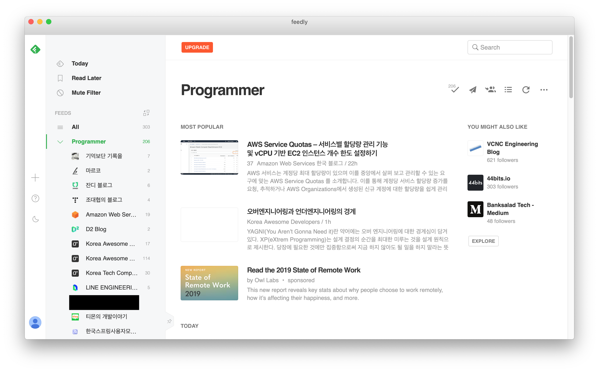

<!DOCTYPE html>
<html>
<head><meta name="generator" content="Hexo 3.9.0">
    <meta charset="utf-8">

    

    
    <title>🐥병아리 개발자가 IT 정보를 얻는 방법들 | Jade&#39;s Blog</title>
    
    <meta name="viewport" content="width=device-width, initial-scale=1, maximum-scale=1">
    
        <meta name="keywords" content="Think">
    
    <meta name="description" content="개발을 처음 시작하거나, 잘 모르는 경우 IT/개발 정보를 어디에서 얻어야하는지부터 잘 모르는 경우가 있다.본인 또한 IT 정보를 얻고 커뮤니케이션을 하는 방법을 잘 몰랐기 때문에,과거의 나처럼 잘 모르는 병아리 개발자들에게 정보를 공유하고 싶어서 글을 적게되었다. 1. 페이스북개발자들이 가장 빠른 정보를 주고 받는 플랫폼은 페이스북인 것 같다.특히 세미나">
<meta name="keywords" content="Think">
<meta property="og:type" content="article">
<meta property="og:title" content="🐥병아리 개발자가 IT 정보를 얻는 방법들">
<meta property="og:url" content="https://kodakyung.github.io/2019/09/26/think-20190926-how-junior-developers-get-it-information/index.html">
<meta property="og:site_name" content="Jade&#39;s Blog">
<meta property="og:description" content="개발을 처음 시작하거나, 잘 모르는 경우 IT/개발 정보를 어디에서 얻어야하는지부터 잘 모르는 경우가 있다.본인 또한 IT 정보를 얻고 커뮤니케이션을 하는 방법을 잘 몰랐기 때문에,과거의 나처럼 잘 모르는 병아리 개발자들에게 정보를 공유하고 싶어서 글을 적게되었다. 1. 페이스북개발자들이 가장 빠른 정보를 주고 받는 플랫폼은 페이스북인 것 같다.특히 세미나">
<meta property="og:locale" content="en">
<meta property="og:image" content="https://kodakyung.github.io/2019/09/26/think-20190926-how-junior-developers-get-it-information/01.png">
<meta property="og:updated_time" content="2020-03-19T00:43:22.696Z">
<meta name="twitter:card" content="summary">
<meta name="twitter:title" content="🐥병아리 개발자가 IT 정보를 얻는 방법들">
<meta name="twitter:description" content="개발을 처음 시작하거나, 잘 모르는 경우 IT/개발 정보를 어디에서 얻어야하는지부터 잘 모르는 경우가 있다.본인 또한 IT 정보를 얻고 커뮤니케이션을 하는 방법을 잘 몰랐기 때문에,과거의 나처럼 잘 모르는 병아리 개발자들에게 정보를 공유하고 싶어서 글을 적게되었다. 1. 페이스북개발자들이 가장 빠른 정보를 주고 받는 플랫폼은 페이스북인 것 같다.특히 세미나">
<meta name="twitter:image" content="https://kodakyung.github.io/2019/09/26/think-20190926-how-junior-developers-get-it-information/01.png">
    
    <link rel="canonical" href="https://kodakyung.github.io/2019/09/26/think-20190926-how-junior-developers-get-it-information/">

    
        <link rel="alternate" href="https://kodakyung.github.io/feed.xml" title="Jade&#39;s Blog" type="application/atom+xml">
    

    
        <link rel="icon" href="/images/favicions/floppy_disk.ico">
    

    <link rel="stylesheet" href="/libs/font-awesome/css/font-awesome.min.css">
    <link rel="stylesheet" href="/libs/titillium-web/styles.css">
    <link rel="stylesheet" href="/libs/source-code-pro/styles.css">

    <link rel="stylesheet" href="/css/style.css">

    <script src="/libs/jquery/3.3.1/jquery.min.js"></script>
    
    
        <link rel="stylesheet" href="/libs/lightgallery/css/lightgallery.min.css">
    
    
        <link rel="stylesheet" href="/libs/justified-gallery/justifiedGallery.min.css">
    
    
        <script type="text/javascript">
(function(i,s,o,g,r,a,m) {i['GoogleAnalyticsObject']=r;i[r]=i[r]||function() {
(i[r].q=i[r].q||[]).push(arguments)},i[r].l=1*new Date();a=s.createElement(o),
m=s.getElementsByTagName(o)[0];a.async=1;a.src=g;m.parentNode.insertBefore(a,m)
})(window,document,'script','//www.google-analytics.com/analytics.js','ga');

ga('create', 'UA-146445480-1', 'auto');
ga('send', 'pageview');

</script>

    
    


    <link rel="stylesheet" href="https://cdn.rawgit.com/innks/NanumSquareRound/master/nanumsquareround.css">
</head>
</html>
<body>
    <div id="wrap">
        <header id="header">
    <div id="header-outer" class="outer">
        <div class="container">
            <div class="container-inner">
                <div id="header-title">
                    <h1 class="logo-wrap">
                        <a href="/" class="logo"></a>
                    </h1>
                    
                        <h2 class="subtitle-wrap">
                            <p class="subtitle">An archive for daily discovery</p>
                        </h2>
                    
                </div>
                <div id="header-inner" class="nav-container">
                    <a id="main-nav-toggle" class="nav-icon fa fa-bars"></a>
                    <div class="nav-container-inner">
                        <ul id="main-nav">
                            
                                <li class="main-nav-list-item" >
                                    <a class="main-nav-list-link" href="/">Home</a>
                                </li>
                            
                                        <ul class="main-nav-list"><li class="main-nav-list-item"><a class="main-nav-list-link" href="/categories/cs/">CS</a><ul class="main-nav-list-child"><li class="main-nav-list-item"><a class="main-nav-list-link" href="/categories/cs/database/">DataBase</a></li><li class="main-nav-list-item"><a class="main-nav-list-link" href="/categories/cs/os/">OS</a></li></ul></li><li class="main-nav-list-item"><a class="main-nav-list-link" href="/categories/programming/">Programming</a><ul class="main-nav-list-child"><li class="main-nav-list-item"><a class="main-nav-list-link" href="/categories/programming/common/">Common</a></li><li class="main-nav-list-item"><a class="main-nav-list-link" href="/categories/programming/java/">Java</a></li><li class="main-nav-list-item"><a class="main-nav-list-link" href="/categories/programming/javascript/">Javascript</a></li></ul></li><li class="main-nav-list-item"><a class="main-nav-list-link" href="/categories/server/">Server</a><ul class="main-nav-list-child"><li class="main-nav-list-item"><a class="main-nav-list-link" href="/categories/server/netty/">Netty</a></li><li class="main-nav-list-item"><a class="main-nav-list-link" href="/categories/server/orm/">ORM</a></li><li class="main-nav-list-item"><a class="main-nav-list-link" href="/categories/server/spring/">Spring</a></li><li class="main-nav-list-item"><a class="main-nav-list-link" href="/categories/server/test/">Test</a></li></ul></li><li class="main-nav-list-item"><a class="main-nav-list-link" href="/categories/system/">System</a><ul class="main-nav-list-child"><li class="main-nav-list-item"><a class="main-nav-list-link" href="/categories/system/docker/">Docker</a></li><li class="main-nav-list-item"><a class="main-nav-list-link" href="/categories/system/shell/">Shell</a></li></ul></li><li class="main-nav-list-item"><a class="main-nav-list-link" href="/categories/think/">Think</a></li><li class="main-nav-list-item"><a class="main-nav-list-link" href="/categories/troubleshooting/">Troubleshooting</a></li><li class="main-nav-list-item"><a class="main-nav-list-link" href="/categories/web/">Web</a></li></ul>
                                    
                                <li class="main-nav-list-item" >
                                    <a class="main-nav-list-link" href="/about/index.html">About</a>
                                </li>
                            
                        </ul>
                        <nav id="sub-nav">
                            <div id="search-form-wrap">

    <form class="search-form">
        <input type="text" class="ins-search-input search-form-input" placeholder="Search" />
        <button type="submit" class="search-form-submit"></button>
    </form>
    <div class="ins-search">
    <div class="ins-search-mask"></div>
    <div class="ins-search-container">
        <div class="ins-input-wrapper">
            <input type="text" class="ins-search-input" placeholder="Type something..." />
            <span class="ins-close ins-selectable"><i class="fa fa-times-circle"></i></span>
        </div>
        <div class="ins-section-wrapper">
            <div class="ins-section-container"></div>
        </div>
    </div>
</div>
<script>
(function (window) {
    var INSIGHT_CONFIG = {
        TRANSLATION: {
            POSTS: 'Posts',
            PAGES: 'Pages',
            CATEGORIES: 'Categories',
            TAGS: 'Tags',
            UNTITLED: '(Untitled)',
        },
        ROOT_URL: '/',
        CONTENT_URL: '/content.json',
    };
    window.INSIGHT_CONFIG = INSIGHT_CONFIG;
})(window);
</script>
<script src="/js/insight.js"></script>

</div>
                        </nav>
                    </div>
                </div>
            </div>
        </div>
    </div>
</header>
        <div class="container">
            <div class="main-body container-inner">
                <div class="main-body-inner">
                    <section id="main">
                        <div class="main-body-header">
    <h1 class="header">
    
    <a class="page-title-link" href="/categories/think/">Think</a>
    </h1>
</div>

                        <div class="main-body-content">
                            <article id="post-think-20190926-how-junior-developers-get-it-information" class="article article-single article-type-post" itemscope itemprop="blogPost">
    <div class="article-inner">
        
            <header class="article-header">
                
    
        <h1 class="article-title" itemprop="name">
        🐥병아리 개발자가 IT 정보를 얻는 방법들
        </h1>
    

            </header>
        
        
            <div class="article-meta">
                
    <div class="article-date">
        <a href="/2019/09/26/think-20190926-how-junior-developers-get-it-information/" class="article-date">
            <time datetime="2019-09-26T13:30:38.000Z" itemprop="datePublished">2019-09-26</time>
        </a>
    </div>

		

                
    <div class="article-tag">
        <i class="fa fa-tag"></i>
        <a class="tag-link" href="/tags/think/">Think</a>
    </div>

            </div>
        
        
        <div class="article-entry" itemprop="articleBody">
            <p>개발을 처음 시작하거나, 잘 모르는 경우 <code>IT/개발 정보</code>를 어디에서 얻어야하는지부터 잘 모르는 경우가 있다.<br>본인 또한 IT 정보를 얻고 커뮤니케이션을 하는 방법을 잘 몰랐기 때문에,<br>과거의 나처럼 잘 모르는 병아리 개발자들에게 정보를 공유하고 싶어서 글을 적게되었다.</p>
<h2 id="1-페이스북"><a href="#1-페이스북" class="headerlink" title="1. 페이스북"></a>1. 페이스북</h2><p>개발자들이 <code>가장 빠른 정보</code>를 주고 받는 플랫폼은 페이스북인 것 같다.<br>특히 <code>세미나/컨퍼런스</code>에 대한 정보를 실시간으로 얻기 좋다.<br>그리고 IT 계에서 유명한 분들의 글 중 특히 양질의 글이 추천으로 올라오기도 한다.<br>SNS를 하기 싫더라도 페이스북은 구독용 계정이라도 만드는 것을 추천한다.(<del>본인 얘기</del>)<br>자신이 관심 있는 분야의 페이지를 구독하는 것이 좋지만, 정말 아무 것도 모른다면 <code>생활코딩</code> 페이지를 구독하자. <code>생활코딩</code> 페이지에서 글을 보다보면 다른 페이지의 글을 공유해오기도 하고 다른 여러 IT 관련 페이지들이 추천으로 뜨는 편이다.  </p>
<h3 id="기본적으로-추천하는-페이지들"><a href="#기본적으로-추천하는-페이지들" class="headerlink" title="기본적으로 추천하는 페이지들"></a>기본적으로 추천하는 페이지들</h3><ul>
<li>생활코딩 : 온갖 IT 글이 종류를 가리지 않고 올라온다.</li>
<li>출퇴근길 개발 읽기 : 개발에 관련된 양질의 포스팅이 올라온다.</li>
<li>좋은 지식 공유 Popit : Popit 사이트의 글이 올라온다.</li>
<li>초보 개발자 모임</li>
</ul>
<blockquote>
<p>우선 이 4개 페이지는 구독하고 시작하자</p>
</blockquote>
<h2 id="2-RSS"><a href="#2-RSS" class="headerlink" title="2. RSS"></a>2. RSS</h2><p>좋은 개발자 블로그는 많은데, 블로그를 매번 찾아가서 신규 게시글을 읽는건 생각보다 엄청나게 힘든일이다. 그때 RSS 구독을 이용하는 것을 추천한다. 개발자들이라면 보통 블로그에 RSS 설정을 해둔 곳이 많다. (<del>이 블로그도 되어있다..</del>)<br><code>Chrome Extension</code>이나 <code>Feedly</code> 등의 App을 이용하면 이런 개발자들의 블로그들을 구독할 수 있다. 관심 있는 분야의 블로그를 구독해두고 짬짬히 글을 읽는 것을 추천한다.<br>하지만 RSS 구독은 <code>push</code>가 오지 않기 때문에 버릇을 들이지 않으면 자주 안읽게 된다는 단점이 있다. 그래서 가급적이면 하루 1번은 들어가려고 노력 중이다..  </p>
<p></p>
<blockquote>
<p>이런식으로 블로그글을 한번에 모아서 볼 수 있다.<br>또한 인기 있는 글도 모아서 보여준다. </p>
</blockquote>
<p>그 밖에도 좋은 개발 블로그들을 모아둔 <a href="https://github.com/isme2n/awesome-blogs" target="_blank" rel="noopener">awesome-blogs</a>도 RSS 서비스를 제공하니 구독하는 것을 추천한다. </p>
<h2 id="3-Slack"><a href="#3-Slack" class="headerlink" title="3. Slack"></a>3. Slack</h2><p>관심 있는 IT 커뮤니티의 Slack에 참여하는 것도 정보를 얻는 좋은 방법이다.<br><code>DjangoGirls</code>나 <code>9XD</code>, <code>백준 알고리즘</code>과 같이 관심 있는 IT 커뮤니티의 Slack에 가입해보자.</p>
<h2 id="4-메일링-서비스"><a href="#4-메일링-서비스" class="headerlink" title="4. 메일링 서비스"></a>4. 메일링 서비스</h2><p>개인적으로 IT 정보를 얻을 때 메일링 서비스를 애용하는 편이 아니라 구독하는 경로는 잘모르지만 RSS보다 메일링 서비스를 선호하는 경우도 많다.<br><a href="http://daily-devblog.com" target="_blank" rel="noopener">Daily DevBlog</a>에서 개발자 블로그를 메일링 해주며, <code>매일 프로그래밍</code>은 매일 아침 알고리즘 문제를 보내준다. 그밖에 <a href="https://newneek.co" target="_blank" rel="noopener">NewNeek</a>은 간단한 시사이슈를 정리해 메일링해준다.</p>
<h2 id="5-기타-IT-커뮤니티"><a href="#5-기타-IT-커뮤니티" class="headerlink" title="5. 기타 IT 커뮤니티"></a>5. 기타 IT 커뮤니티</h2><p>가장 대중적으로 유명한 커뮤니티는 <a href="https://okky.kr/" target="_blank" rel="noopener">okky</a>이다. 위의 모든 것들을 읽고 나면 커뮤니티까지 가기는 어려워서 자주 가진 않지만 좋은 글들이 많다.</p>
<h2 id="6-동료-개발자들"><a href="#6-동료-개발자들" class="headerlink" title="6. 동료 개발자들"></a>6. 동료 개발자들</h2><p>가장 중요한 것은 열정적인 <code>동료 개발자들</code>(🐏🐑)이 주변에 있는 것이라 생각한다.<br>1번부터 5번까지 현실적으로 모든 정보를 혼자서 다 얻기는 어려운 일이다.<br>주변에 함께 개발을 하는 친구들과 개발에 대한 얘기를 나누다보면 서로의 관심사에 대해 알게되고,<br>서로의 관심사에 대해 알게되면 관련된 IT 정보를 얻게 되었을 때 서로가 서로에게 알려주며 도움도 되고 자극 받으며 성장할 수 있는 것 같다.</p>
<p>개발을 할수록, 개발자의 문화에 익숙해질수록 개발자끼리의 커뮤니케이션이 굉장히 중요하다는 생각이 든다.<br>다른 직업들도 그렇겠지만 개발자야말로 외골수가 아닌 커뮤니케이터가 필요하다는 것을 깨닫게 된다.</p>

        </div>
        <footer class="article-footer">
            


    <a data-url="https://kodakyung.github.io/2019/09/26/think-20190926-how-junior-developers-get-it-information/" data-id="ck7y1bbhb00161l8937epkw64" class="article-share-link"><i class="fa fa-share"></i>Share</a>
<script>
    (function ($) {
        $('body').on('click', function() {
            $('.article-share-box.on').removeClass('on');
        }).on('click', '.article-share-link', function(e) {
            e.stopPropagation();

            var $this = $(this),
                url = $this.attr('data-url'),
                encodedUrl = encodeURIComponent(url),
                id = 'article-share-box-' + $this.attr('data-id'),
                offset = $this.offset(),
                box;

            if ($('#' + id).length) {
                box = $('#' + id);

                if (box.hasClass('on')){
                    box.removeClass('on');
                    return;
                }
            } else {
                var html = [
                    '<div id="' + id + '" class="article-share-box">',
                        '<input class="article-share-input" value="' + url + '">',
                        '<div class="article-share-links">',
                            '<a href="https://twitter.com/intent/tweet?url=' + encodedUrl + '" class="article-share-twitter" target="_blank" title="Twitter"></a>',
                            '<a href="https://www.facebook.com/sharer.php?u=' + encodedUrl + '" class="article-share-facebook" target="_blank" title="Facebook"></a>',
                            '<a href="http://pinterest.com/pin/create/button/?url=' + encodedUrl + '" class="article-share-pinterest" target="_blank" title="Pinterest"></a>',
                            '<a href="https://plus.google.com/share?url=' + encodedUrl + '" class="article-share-google" target="_blank" title="Google+"></a>',
                        '</div>',
                    '</div>'
                ].join('');

              box = $(html);

              $('body').append(box);
            }

            $('.article-share-box.on').hide();

            box.css({
                top: offset.top + 25,
                left: offset.left
            }).addClass('on');

        }).on('click', '.article-share-box', function (e) {
            e.stopPropagation();
        }).on('click', '.article-share-box-input', function () {
            $(this).select();
        }).on('click', '.article-share-box-link', function (e) {
            e.preventDefault();
            e.stopPropagation();

            window.open(this.href, 'article-share-box-window-' + Date.now(), 'width=500,height=450');
        });
    })(jQuery);
</script>

        </footer>
    </div>
    <script type="application/ld+json">
    {
        "@context": "https://schema.org",
        "@type": "BlogPosting",
        "author": {
            "@type": "Person",
            "name": "Dakyung Ko"
        },
        "headline": "🐥병아리 개발자가 IT 정보를 얻는 방법들",
        "image": "https://kodakyung.github.io01.png",
        "keywords": "Think",
        "genre": "Think",
        "datePublished": "2019-09-26",
        "dateCreated": "2019-09-26",
        "dateModified": "2020-03-19",
        "url": "https://kodakyung.github.io/2019/09/26/think-20190926-how-junior-developers-get-it-information/",
        "description": "개발을 처음 시작하거나, 잘 모르는 경우 IT/개발 정보를 어디에서 얻어야하는지부터 잘 모르는 경우가 있다.본인 또한 IT 정보를 얻고 커뮤니케이션을 하는 방법을 잘 몰랐기 때문에,과거의 나처럼 잘 모르는 병아리 개발자들에게 정보를 공유하고 싶어서 글을 적게되었다.
1. 페이스북개발자들이 가장 빠른 정보를 주고 받는 플랫폼은 페이스북인 것 같다.특히 세미나"
        "wordCount": 443
    }
</script>

</article>

    <section id="comments">
    
        
    <div id="disqus_thread">
        <noscript>Please enable JavaScript to view the <a href="//disqus.com/?ref_noscript">comments powered by Disqus.</a></noscript>
    </div>

    
    </section>


                        </div>
                    </section>
                    <aside id="sidebar">
    <a class="sidebar-toggle" title="Expand Sidebar"><i class="toggle icon"></i></a>
    <div class="sidebar-top">
        <p>follow:</p>
        <ul class="social-links">
            
                
                <li>
                    <a class="social-tooltip" title="github" href="https://github.com/kodakyung" target="_blank" rel="noopener">
                        <i class="icon fa fa-github"></i>
                    </a>
                </li>
                
            
                
                <li>
                    <a class="social-tooltip" title="rss" href="https://kodakyung.github.io/feed.xml" target="_blank" rel="noopener">
                        <i class="icon fa fa-rss"></i>
                    </a>
                </li>
                
            
        </ul>
    </div>
    
        
<nav id="article-nav">
    
        <a href="/2019/10/15/cs-database-20191015-mysql-transaction-and-concurrency-control/" id="article-nav-newer" class="article-nav-link-wrap">
        <strong class="article-nav-caption">newer</strong>
        <p class="article-nav-title">
        
            MySQL 트랜잭션과 동시성 제어
        
        </p>
        <i class="icon fa fa-chevron-right" id="icon-chevron-right"></i>
    </a>
    
    
        <a href="/2019/08/31/Troubleshooting-20190831-Gradle로-빌드-시-현재-git-branch-사용하기/" id="article-nav-older" class="article-nav-link-wrap">
        <strong class="article-nav-caption">older</strong>
        <p class="article-nav-title">Gradle로 빌드 시 현재 git branch 사용하기</p>
        <i class="icon fa fa-chevron-left" id="icon-chevron-left"></i>
        </a>
    
</nav>

    
    <div class="widgets-container">
        
            
                

            
                
    <div class="widget-wrap">
        <h3 class="widget-title">recents</h3>
        <div class="widget">
            <ul id="recent-post" class="no-thumbnail">
                
                    <li>
                        
                        <div class="item-inner">
                            <p class="item-category"><a class="article-category-link" href="/categories/troubleshooting/">Troubleshooting</a></p>
                            <p class="item-title"><a href="/2020/02/01/Troubleshooting-20200201-reverting-invalid-git-merge/" class="title">git 커밋 중간에 잘못된 merge 되돌리기</a></p>
                            <p class="item-date"><time datetime="2020-02-01T14:41:26.000Z" itemprop="datePublished">2020-02-01</time></p>
                        </div>
                    </li>
                
                    <li>
                        
                        <div class="item-inner">
                            <p class="item-category"><a class="article-category-link" href="/categories/think/">Think</a></p>
                            <p class="item-title"><a href="/2020/01/20/think-20200120-women-who-code-talk-with-sonia-from-ms/" class="title">Talk with Sonia from Microsoft - Inspiring Tech Women</a></p>
                            <p class="item-date"><time datetime="2020-01-20T13:54:30.000Z" itemprop="datePublished">2020-01-20</time></p>
                        </div>
                    </li>
                
                    <li>
                        
                        <div class="item-inner">
                            <p class="item-category"><a class="article-category-link" href="/categories/programming/">Programming</a><i class="icon fa fa-angle-right"></i><a class="article-category-link" href="/categories/programming/common/">Common</a></p>
                            <p class="item-title"><a href="/2020/01/19/Programming-common-20200119-encryption-vs-hash/" class="title">암호화 vs 해시</a></p>
                            <p class="item-date"><time datetime="2020-01-19T12:03:04.000Z" itemprop="datePublished">2020-01-19</time></p>
                        </div>
                    </li>
                
                    <li>
                        
                        <div class="item-inner">
                            <p class="item-category"><a class="article-category-link" href="/categories/programming/">Programming</a><i class="icon fa fa-angle-right"></i><a class="article-category-link" href="/categories/programming/java/">Java</a></p>
                            <p class="item-title"><a href="/2019/10/20/Programming-Java-20191020-java-stream/" class="title">Java - Stream 기초</a></p>
                            <p class="item-date"><time datetime="2019-10-19T21:54:07.000Z" itemprop="datePublished">2019-10-20</time></p>
                        </div>
                    </li>
                
                    <li>
                        
                        <div class="item-inner">
                            <p class="item-category"><a class="article-category-link" href="/categories/programming/">Programming</a><i class="icon fa fa-angle-right"></i><a class="article-category-link" href="/categories/programming/common/">Common</a></p>
                            <p class="item-title"><a href="/2019/10/20/Programming-common-20191020-functional-thinking-ch7/" class="title">함수형 사고 - ch7 실용적 사고</a></p>
                            <p class="item-date"><time datetime="2019-10-19T21:47:20.000Z" itemprop="datePublished">2019-10-20</time></p>
                        </div>
                    </li>
                
            </ul>
        </div>
    </div>

            
                
    <div class="widget-wrap widget-list">
        <h3 class="widget-title">categories</h3>
        <div class="widget">
            <ul class="category-list"><li class="category-list-item"><a class="category-list-link" href="/categories/cs/">CS</a><span class="category-list-count">4</span><ul class="category-list-child"><li class="category-list-item"><a class="category-list-link" href="/categories/cs/database/">DataBase</a><span class="category-list-count">3</span></li><li class="category-list-item"><a class="category-list-link" href="/categories/cs/os/">OS</a><span class="category-list-count">1</span></li></ul></li><li class="category-list-item"><a class="category-list-link" href="/categories/programming/">Programming</a><span class="category-list-count">37</span><ul class="category-list-child"><li class="category-list-item"><a class="category-list-link" href="/categories/programming/common/">Common</a><span class="category-list-count">4</span></li><li class="category-list-item"><a class="category-list-link" href="/categories/programming/java/">Java</a><span class="category-list-count">24</span></li><li class="category-list-item"><a class="category-list-link" href="/categories/programming/javascript/">Javascript</a><span class="category-list-count">9</span></li></ul></li><li class="category-list-item"><a class="category-list-link" href="/categories/server/">Server</a><span class="category-list-count">16</span><ul class="category-list-child"><li class="category-list-item"><a class="category-list-link" href="/categories/server/netty/">Netty</a><span class="category-list-count">8</span></li><li class="category-list-item"><a class="category-list-link" href="/categories/server/orm/">ORM</a><span class="category-list-count">3</span></li><li class="category-list-item"><a class="category-list-link" href="/categories/server/spring/">Spring</a><span class="category-list-count">2</span></li><li class="category-list-item"><a class="category-list-link" href="/categories/server/test/">Test</a><span class="category-list-count">3</span></li></ul></li><li class="category-list-item"><a class="category-list-link" href="/categories/system/">System</a><span class="category-list-count">4</span><ul class="category-list-child"><li class="category-list-item"><a class="category-list-link" href="/categories/system/docker/">Docker</a><span class="category-list-count">3</span></li><li class="category-list-item"><a class="category-list-link" href="/categories/system/shell/">Shell</a><span class="category-list-count">1</span></li></ul></li><li class="category-list-item"><a class="category-list-link" href="/categories/think/">Think</a><span class="category-list-count">2</span></li><li class="category-list-item"><a class="category-list-link" href="/categories/troubleshooting/">Troubleshooting</a><span class="category-list-count">7</span></li><li class="category-list-item"><a class="category-list-link" href="/categories/web/">Web</a><span class="category-list-count">3</span></li></ul>
        </div>
    </div>


            
                
    <div class="widget-wrap widget-list">
        <h3 class="widget-title">archives</h3>
        <div class="widget">
            <ul class="archive-list"><li class="archive-list-item"><a class="archive-list-link" href="/archives/2020/02/">February 2020</a><span class="archive-list-count">1</span></li><li class="archive-list-item"><a class="archive-list-link" href="/archives/2020/01/">January 2020</a><span class="archive-list-count">2</span></li><li class="archive-list-item"><a class="archive-list-link" href="/archives/2019/10/">October 2019</a><span class="archive-list-count">6</span></li><li class="archive-list-item"><a class="archive-list-link" href="/archives/2019/09/">September 2019</a><span class="archive-list-count">1</span></li><li class="archive-list-item"><a class="archive-list-link" href="/archives/2019/08/">August 2019</a><span class="archive-list-count">1</span></li><li class="archive-list-item"><a class="archive-list-link" href="/archives/2019/07/">July 2019</a><span class="archive-list-count">1</span></li><li class="archive-list-item"><a class="archive-list-link" href="/archives/2019/06/">June 2019</a><span class="archive-list-count">2</span></li><li class="archive-list-item"><a class="archive-list-link" href="/archives/2019/04/">April 2019</a><span class="archive-list-count">3</span></li><li class="archive-list-item"><a class="archive-list-link" href="/archives/2019/03/">March 2019</a><span class="archive-list-count">1</span></li><li class="archive-list-item"><a class="archive-list-link" href="/archives/2019/02/">February 2019</a><span class="archive-list-count">2</span></li><li class="archive-list-item"><a class="archive-list-link" href="/archives/2019/01/">January 2019</a><span class="archive-list-count">10</span></li><li class="archive-list-item"><a class="archive-list-link" href="/archives/2018/12/">December 2018</a><span class="archive-list-count">1</span></li><li class="archive-list-item"><a class="archive-list-link" href="/archives/2018/11/">November 2018</a><span class="archive-list-count">6</span></li><li class="archive-list-item"><a class="archive-list-link" href="/archives/2018/10/">October 2018</a><span class="archive-list-count">6</span></li><li class="archive-list-item"><a class="archive-list-link" href="/archives/2018/09/">September 2018</a><span class="archive-list-count">5</span></li><li class="archive-list-item"><a class="archive-list-link" href="/archives/2018/08/">August 2018</a><span class="archive-list-count">11</span></li><li class="archive-list-item"><a class="archive-list-link" href="/archives/2018/07/">July 2018</a><span class="archive-list-count">3</span></li><li class="archive-list-item"><a class="archive-list-link" href="/archives/2018/06/">June 2018</a><span class="archive-list-count">2</span></li><li class="archive-list-item"><a class="archive-list-link" href="/archives/2018/05/">May 2018</a><span class="archive-list-count">9</span></li></ul>
        </div>
    </div>


            
                
    <div class="widget-wrap widget-float">
        <h3 class="widget-title">tag cloud</h3>
        <div class="widget tagcloud">
            <a href="/tags/authrization/" style="font-size: 11.11px;">Authrization</a> <a href="/tags/design-pattern/" style="font-size: 10px;">Design Pattern</a> <a href="/tags/docker/" style="font-size: 12.22px;">Docker</a> <a href="/tags/effective-java/" style="font-size: 18.89px;">Effective Java</a> <a href="/tags/encryption/" style="font-size: 10px;">Encryption</a> <a href="/tags/fish-shell/" style="font-size: 10px;">Fish Shell</a> <a href="/tags/functional-programming/" style="font-size: 10px;">Functional Programming</a> <a href="/tags/functional-thinking/" style="font-size: 12.22px;">Functional Thinking</a> <a href="/tags/git/" style="font-size: 11.11px;">Git</a> <a href="/tags/gradle/" style="font-size: 10px;">Gradle</a> <a href="/tags/http/" style="font-size: 10px;">HTTP</a> <a href="/tags/hash/" style="font-size: 10px;">Hash</a> <a href="/tags/hibernate/" style="font-size: 12.22px;">Hibernate</a> <a href="/tags/intellij/" style="font-size: 10px;">IntelliJ</a> <a href="/tags/jpa/" style="font-size: 10px;">JPA</a> <a href="/tags/java/" style="font-size: 20px;">Java</a> <a href="/tags/javascript/" style="font-size: 16.67px;">Javascript</a> <a href="/tags/junit/" style="font-size: 10px;">Junit</a> <a href="/tags/maven/" style="font-size: 10px;">Maven</a> <a href="/tags/meetup/" style="font-size: 10px;">Meetup</a> <a href="/tags/mysql/" style="font-size: 12.22px;">MySQL</a> <a href="/tags/netty/" style="font-size: 15.56px;">Netty</a> <a href="/tags/network/" style="font-size: 15.56px;">Network</a> <a href="/tags/oauth2/" style="font-size: 12.22px;">OAuth2</a> <a href="/tags/os/" style="font-size: 10px;">OS</a> <a href="/tags/reactjs/" style="font-size: 10px;">ReactJS</a> <a href="/tags/refactoring/" style="font-size: 10px;">Refactoring</a> <a href="/tags/sts/" style="font-size: 11.11px;">STS</a> <a href="/tags/shell/" style="font-size: 10px;">Shell</a> <a href="/tags/spring/" style="font-size: 13.33px;">Spring</a> <a href="/tags/springboot/" style="font-size: 12.22px;">SpringBoot</a> <a href="/tags/stub/" style="font-size: 10px;">Stub</a> <a href="/tags/study/" style="font-size: 12.22px;">Study</a> <a href="/tags/tdd/" style="font-size: 10px;">TDD</a> <a href="/tags/tacademy/" style="font-size: 10px;">Tacademy</a> <a href="/tags/test/" style="font-size: 12.22px;">Test</a> <a href="/tags/think/" style="font-size: 10px;">Think</a> <a href="/tags/troubleshooting/" style="font-size: 14.44px;">Troubleshooting</a> <a href="/tags/web/" style="font-size: 12.22px;">Web</a> <a href="/tags/women-who-code/" style="font-size: 10px;">Women Who Code</a> <a href="/tags/생활코딩/" style="font-size: 17.78px;">생활코딩</a>
        </div>
    </div>


            
        
    </div>
</aside>

                </div>
            </div>
        </div>
        <footer id="footer">
    <div class="container">
        <div class="container-inner">
            <a id="back-to-top" href="javascript:;"><i class="icon fa fa-angle-up"></i></a>
            <div class="credit">
                <h1 class="logo-wrap">
                    <a href="/" class="logo"></a>
                </h1>
                <p>&copy; 2020 Dakyung Ko</p>
                <p>Powered by <a href="//hexo.io/" target="_blank">Hexo</a>. Theme by <a href="//github.com/ppoffice" target="_blank">PPOffice</a></p>
            </div>
            <div class="footer-plugins">
              
    


            </div>
        </div>
    </div>
</footer>

        
    
    <script>
    var disqus_shortname = 'kodakyung';
    
    
    var disqus_url = 'https://kodakyung.github.io/2019/09/26/think-20190926-how-junior-developers-get-it-information/';
    
    (function() {
    var dsq = document.createElement('script');
    dsq.type = 'text/javascript';
    dsq.async = true;
    dsq.src = '//' + disqus_shortname + '.disqus.com/embed.js';
    (document.getElementsByTagName('head')[0] || document.getElementsByTagName('body')[0]).appendChild(dsq);
    })();
    </script>


    
        <script src="/libs/lightgallery/js/lightgallery.min.js"></script>
        <script src="/libs/lightgallery/js/lg-thumbnail.min.js"></script>
        <script src="/libs/lightgallery/js/lg-pager.min.js"></script>
        <script src="/libs/lightgallery/js/lg-autoplay.min.js"></script>
        <script src="/libs/lightgallery/js/lg-fullscreen.min.js"></script>
        <script src="/libs/lightgallery/js/lg-zoom.min.js"></script>
        <script src="/libs/lightgallery/js/lg-hash.min.js"></script>
        <script src="/libs/lightgallery/js/lg-share.min.js"></script>
        <script src="/libs/lightgallery/js/lg-video.min.js"></script>
    
    
        <script src="/libs/justified-gallery/jquery.justifiedGallery.min.js"></script>
    
    


<!-- Custom Scripts -->
<script src="/js/main.js"></script>

    </div>
</body>
</html>
